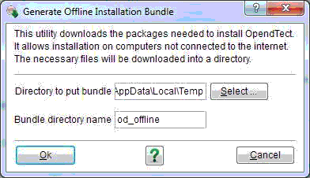

OpendTect has a utility to create and manage multiple installations of the OpendTect system. It takes care of initial installation, extensions, and upgrade/update. This 'OpendTect Installation Manager' will upgrade itself when necessary.
The Installation Manager can be installed in the usual way for your Operating System. After download from opendtect.org you need to execute the self-extracting installer. This can usually be done by double-clicking on the downloaded executable package.
Once OpendTect is installed it is possible to start the Installation Manager from within the OpendTect main window. That is, if your system administration allow it. And actual application management can of course only be done if you have the right permissions.
The starting window of the installation manager allows you to setup some basic parameters before the actual package/plugin selection starts.
The field for Release Type usually selects between 'Stable' and 'Development' releases. The installation base directory is the directory where the OpendTect versions will reside. It can contain multiple releases and release types, and will also contain the latest installation manager executables.
This directory will be remembered. If you initially select an exisiting non-empty directory, then you get this warning message:

If you want to install into a sub-directory of the selected path, then the
second option must be selected. It will create a sub-directory
"OpendTect" at where the installation itself will reside.
After this, if this is a first time, you can select typical package setups.

To read more about OpendTect packages type, please refer to our web-page of licensing types.
If you access the Internet via a proxy, then you will have to specify this. At the top right of the window, click the 'Proxy settings' button. The very first time you run the Installation Manager you will get an error message that no connection can be mde, choose 'give up'. Then you can enter the correct settngs in this dialog:

After this, you will be in the OpendTect Package Manager. This is the main window in which allows you to manage the OpendTect installation. There are two ways of viewing:
Classic View
HTML
View
In both views you can select multiple items to be installed. The installation manager will display the previously installed version for this installation and will show it in the Installed version field.
To read more about a particular item in the list, select the item by clicking on it and read the description on to the right panel.
On the top left corner of the package selection window there is a
"Utilities" menu, which offers some useful functionalities
for the installation manager.
The
utilities menu has the following options.
1) Export download
list
2) Offline installation
3) Rollback
4) Show log
file.
Each of these options are explained below in details.
This option allows the user to download the list of URLs of the individual packages from the download site. This list is stored in a text file which can be used later to download these files directly without the help of the installer program. After downloading, user can run his/her own unzipping scripts to install the packages manually. This facility was only developed for the Linux users. Windows users can use this feature, provided they can prepare their own installation scripts for the installation,.

The offline installation tool allows you to create offline installation bundle from selected packages to any of your local folders along with necessary installation scripts/programs. Once all the packages and scripts/programs are downloaded to this folder, this folder can be copied to any other work stations to install OpendTect by running the scripts/program from this folder. The user interface has two fields, the first one specifies the the location of the bundle folder, and the field below sets the bundle directory name.
Windows:
On Windows you can run the od_setup.exe
program that is present in the folder.
Linux
On Linux you
have to run the unix_install.csh script.
Rollback tool allows you to restore your previous version of the installation. If after updating the software you feel uncomfortable with some of the new features and want to go back to your previous installation, you have to use this tool. As this tool will change your entire installation so you have to use it cautiously.
The installation manager keeps track of all the action it is executing in a log file. This log file can be viewed from this tool. This is useful for debugging purposes. If you face any trouble during the installation process you can send this file to OpendTect support if needed.